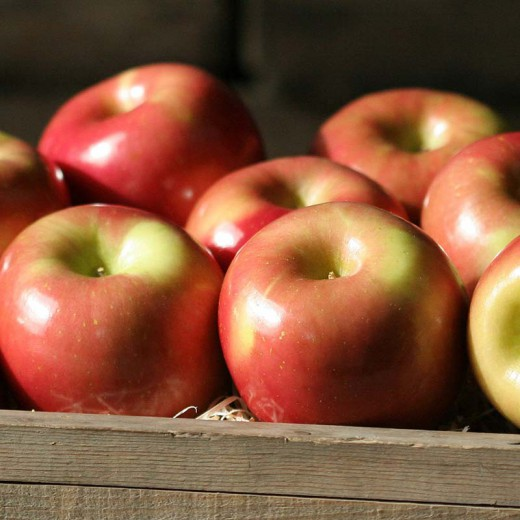

<div class="container">
  <div class="row">
    <div class="col-6 mt-5">
      
    </div>
    <div class="col-6 mt-5">
      <div class="mt-5">
        <h2>Apple Name</h2>
        <h4>Price of Apple</h4>
        <p>
          Fuji apples are super sweet through and through with a delightfully crisp texture. Fujis are a cross between
          Red Delicious and Ralls Janet, an heirloom apple dating back to Thomas Jefferson. Fujis are loved by many for
          their crisp, sweet, and juicy character. We like to eat them chilled, letting the sugary sweetness burst to
          life on the tongue. We partner with other local, organic producers to bring you the best apples in California.
        </p>
        <button class="btn btn-danger">Add to Cart</button>
      </div>
    </div>
  </div>
</div>